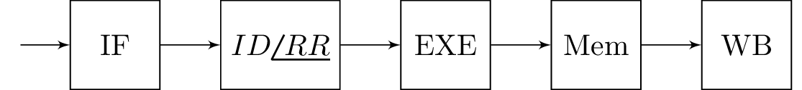

\documentclass{standalone}
\usepackage{blox}
\usepackage{tikz}
\usepackage{steinmetz}
\usetikzlibrary{positioning}
\usetikzlibrary{circuits}
\begin{document}
\begin{tikzpicture}
\bXInput{E}
\bXChain[2]{E}%
{Md/IF,fred/$ID\phase{RR}$,head/EXE,Fun/Mem, Games/WB}
\end{tikzpicture}
\end{document}Created by David Li